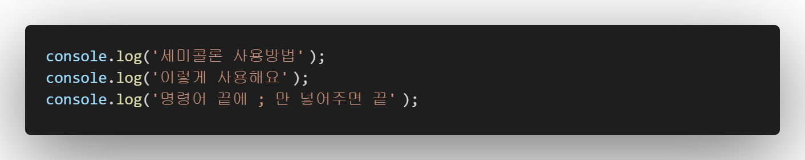
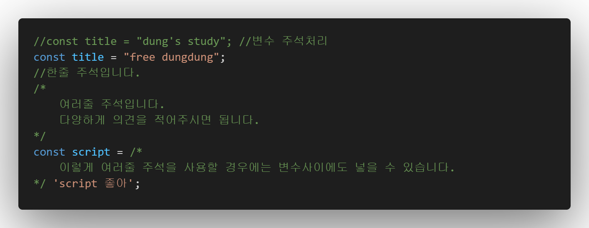
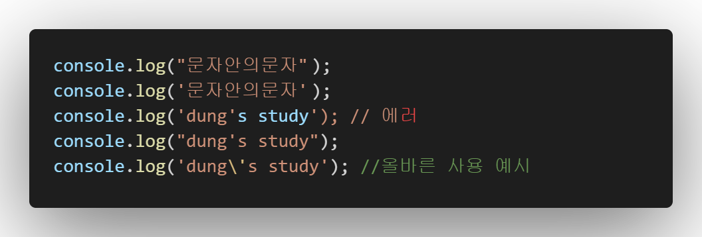
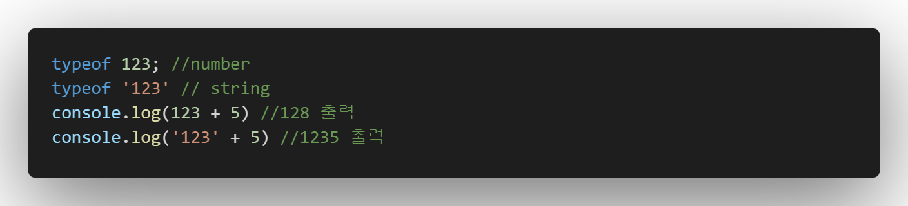
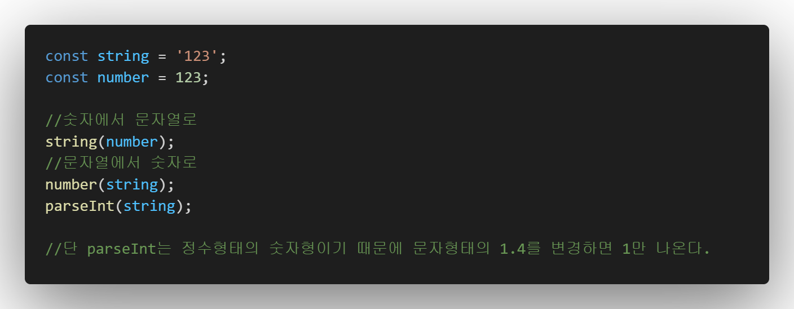
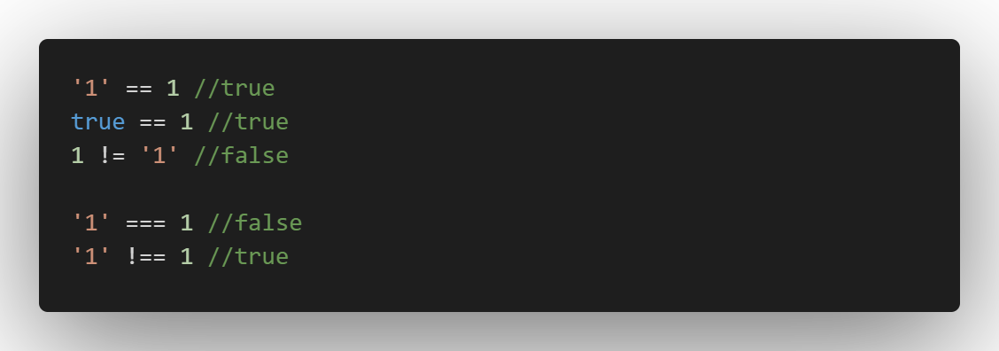
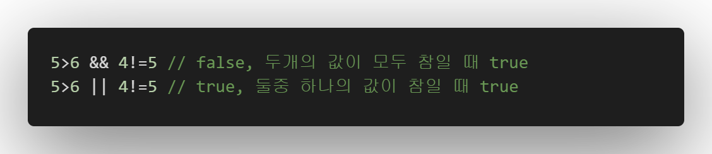

| 이론 | 설명 | |
|---|---|---|
| 세미콜론 | 명령어의 끝 마다 작성해주는 종결어미 [;] |  |
| 주석 | 설명 주석 : 해당 스크립트의 설명을 작성 변수 주석 : 변수를 주석해서 필요할 때 사용하는 방법 |
 |
| 따옴표 | 문자열을 사용할때 많이 사용, '' 혹은 "" 그리고 ``를 사용한다. 단 "문자"안의"문자"는 "문자'안의'문자" 혹은 "문자\"안의\"문자"로 사용해야합니다. 동일 따옴표는 사용 불가능 |  |
| 자료형 | typeof를 통해 해당 자료의 형질을 알 수 있다. 대표적으로 string과 number가존재하고 string은 문자열, number는 숫자를 뜻한다. NaN = not a number |  |
| 자료형변환 | 자료의 형질을 변경하는 것 문자열에서 숫자로 변경시, number('123') 혹은 parseInt('123') 숫자에서 문자열로 변경시, string(123) |
 |
| boolean(불린) | 참과 거짓 연산 용어 | |
| 비교연산자 |
>, < : 작다, 크다 >=, <= : 작거나같다, 크거나같다 ==, != : 같다, 같지 않다 ===, !== : 같다, 같지 않다(자료형까지 비교) |
 |
| 논리연산자 | && : and || : or, 논리연산자는 비교연산자보다 우선순위가 낮다. |
 |